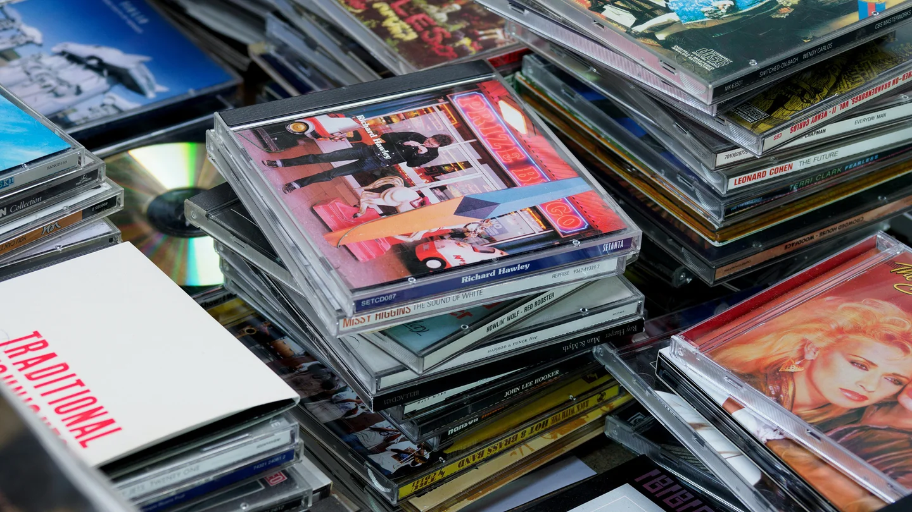

Neden Fiziksel Medya ?
Müzik, sadece bir ses kaydı değildir. Albüm kapağı, içeriğin tasarımı, kitapçıklar ve ek materyaller, sanatçının ifadesinin bir parçasıdır. Fiziksel bir albüm satın aldığınızda, sanatçının yaratıcılığını daha derinlemesine deneyimleme fırsatı elde edersiniz.
